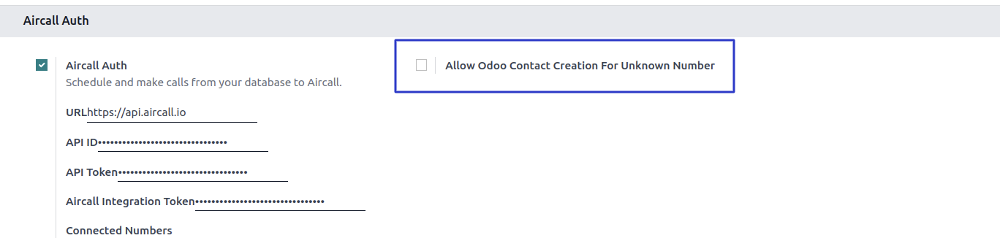
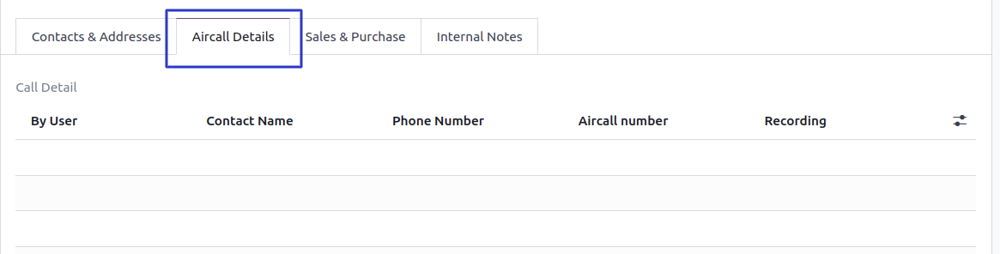
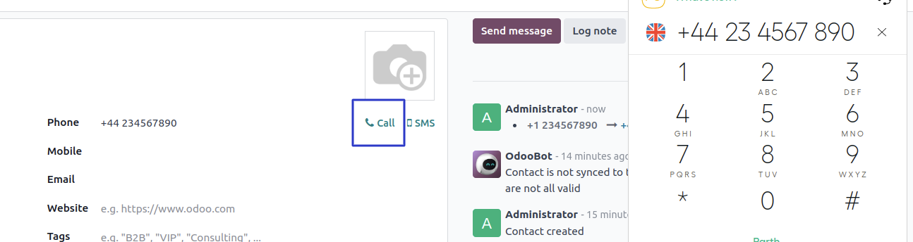
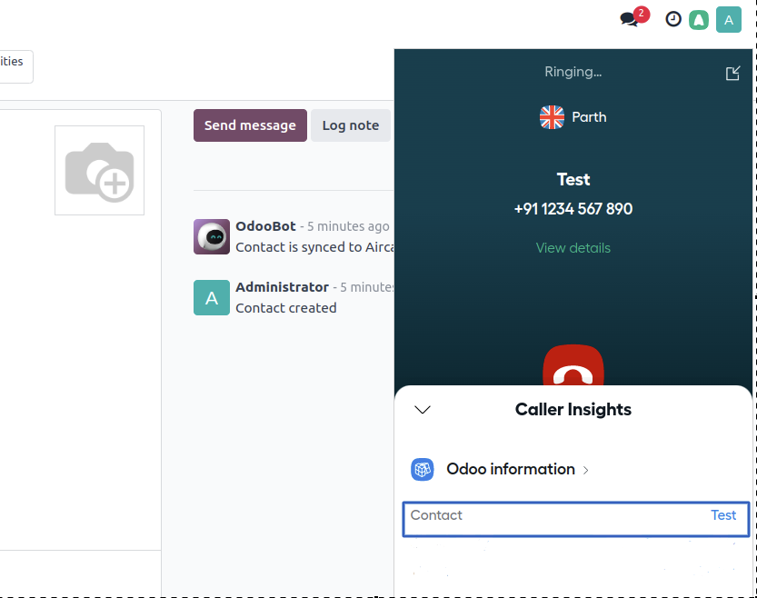
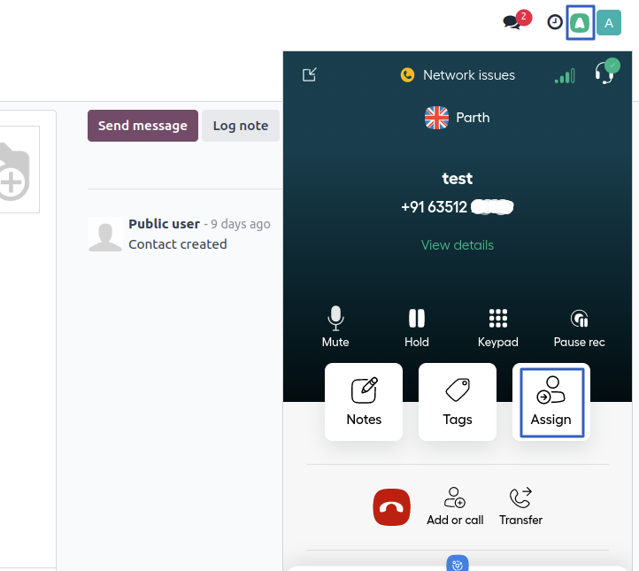
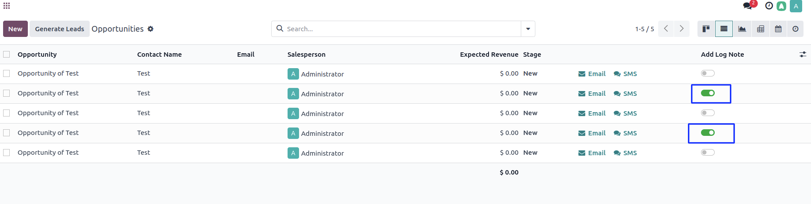
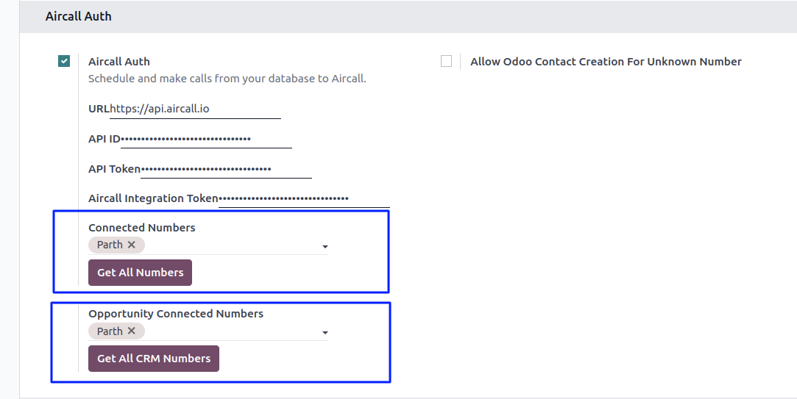
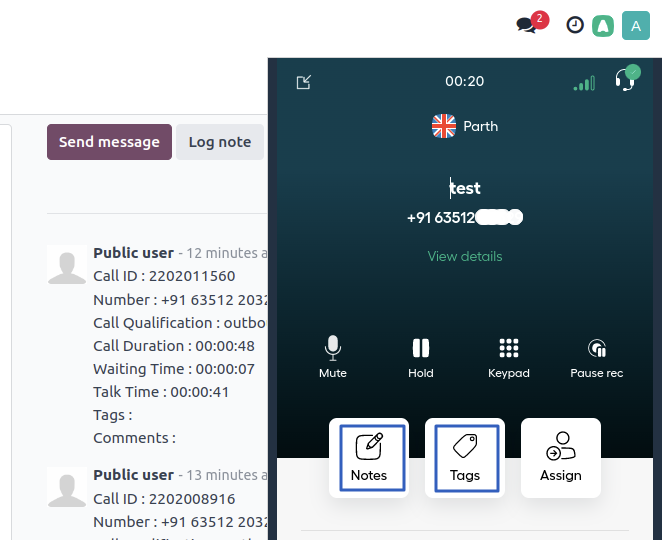

SUGGESTED APPS
Aircall's base module should include seamless CRM integration, enabling real-time syncing of call data with systems like Odoo, ensuring that all interactions are logged and linked to the correct leads or contacts. Users should have the ability to click on a call entry in the call log and be automatically redirected to the corresponding lead in Odoo, streamlining access to related activities, notes, and opportunities. Additionally, Aircall should support inbound and outbound call handling, intelligent call routing, call recording, real-time call logging, detailed analytics, shared call inboxes, notes and tags for collaboration, and role-based user management, all accessible through a user-friendly dashboard.
* This module is tested and working for Odoo enterprise edition.
* This module was developed and tested on basis of standard functionality
and features of odoo,
with other custom modules and customization,
it may conflict.
* Add more features and fix code of other customisation will be subject to extra development.
* Export Contacts from Odoo to Aircall : This cron will only proceed the contacts using below checks.








Yes, this app works well with Odoo Enterprise as well as Odoo Community.
You can contact us for customization in this app or you can write to us at support@caretit.com.
Odoo support and maintenance service is a key service offered by Caret IT. You will
get rapid support by
Caret IT.
email :
support@caretit.com or drop query on
https://www.caretit.com/contactus.
Fetching all aircall numbers in odoo using the fetch numbers button in the configuration setting after fetching number logs and recording functionality is working for aircall.
AirCall number is not changeable because it is set when you are create your AirCall account.
If you want to change the number, the option is available under the dialpad on the AirCall dialpad, and if you want to add a number, go to the AirCall account and click on the Team & User tab and add a user.
Go to the AirCall dialpad and click on the people menu, then select the contacts tab, and you can see the Odoo contacts.
once declined the call you have to close summary window by pressing X then logs and notes will be there in chatter with call detail logs.
We provide 60 days free support with standard Odoo version.
Support is applicable remotely and
from the date of purchase.
We are responsible to be online and answer you between 10:00 AM to 6:00 PM IST.
Caret IT will be there to ensure your success.
NOTE
Caret IT offers complimentary support during the trial period,
and
standard and premium support packages after you buy.